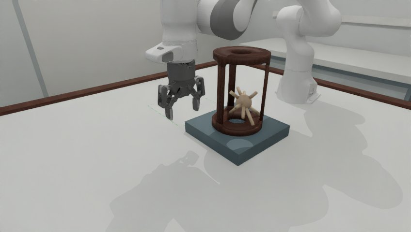
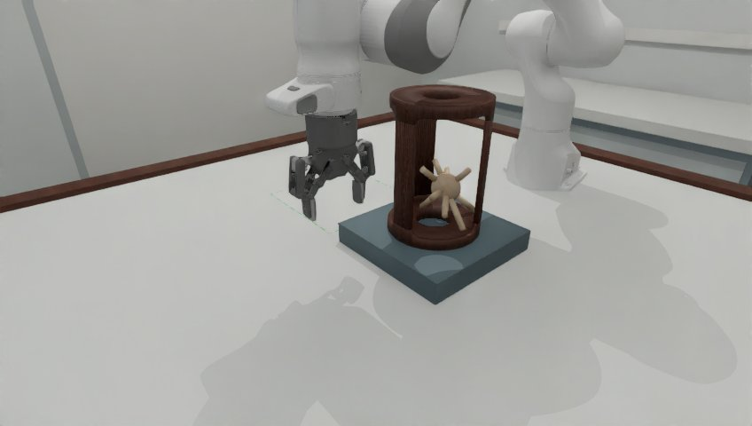
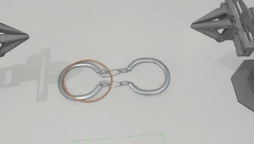
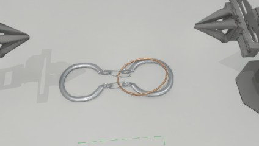
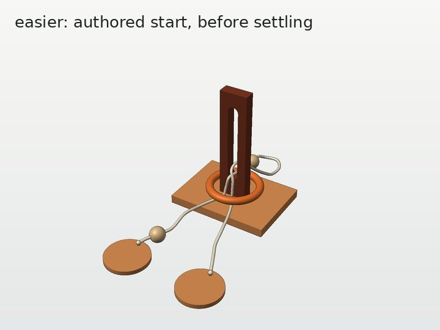
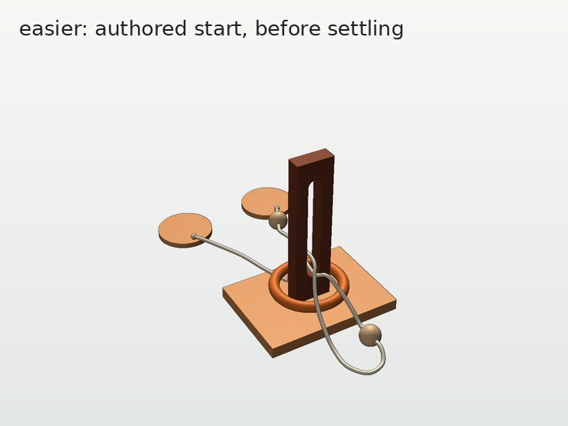

在 easy 之下再加两档
刺球出笼、马蹄环、长孔立柱解环三个任务，在 easy / medium / hard 之下各加了 very_easy 和 easier。新档和现有三档同属一个任务，部件、评分、目标区都共用；切换只换 variation_id。
用法：五档，一个参数
import topogym
env = topogym.make("hedgehog_in_cage", variation_id="very_easy") # very_easy / easier / easy / medium / hard
env.reset()
| 任务 | very_easy | easier | 难度旋钮 |
|---|---|---|---|
hedgehog_in_cage | 夹住朝机器人的那根刺，直接平移拉出笼 | 先绕所夹的刺转约 80°，再拉出 | 三个等宽窗的宽度：118 / 108 mm |
horseshoe_ring | 提起马蹄，环沿链直接滑过另一只马蹄 | 先绕链转环，让长轴横跨马蹄，再沿链拉出 | 环孔：144 mm 圆 / 146 × 120 mm 椭圆 |
slotted_post_ring | 绳从环下方穿过，环沿立柱直接提起越过柱顶 | 另一侧带珠 2 的绳圈搭在环上，先把绳圈穿下去再提环 | 绳的走向：under_ring / loop_over_ring |
- 也可以写全名，如
hedgehog_in_cage_very_easy。variation_id="seeded"的随机抽样仍只抽 easy / medium / hard。 - 两档的设计依据计划原文：very_easy 主要考察接近、抓取、取出和搬运，尽量不需要解谜操作；easier 在抓住后需要调整一次角度或方向。
代码结构：继承 easy，只加一个旋钮
<任务>Task # common.py：场景声明、评分、目标区，所有档共用 ├─ Easy / Medium / Hard # 现有三档 └─ Easy └─ BelowEasy # below_easy.py：加一个旋钮，覆盖一个几何钩子 ├─ VeryEasy # <任务>_very_easy.py：一行，旋钮取值 └─ Easier # <任务>_easier.py：一行，旋钮取值
| 任务 | 旋钮 | 覆盖的几何钩子 | very_easy | easier |
|---|---|---|---|---|
| 刺球 | cage(窗宽 mm) | build_assets() | cage(118.) | cage(108.) |
| 马蹄环 | ring(长轴, 短轴) | template()、rest_poses() | ring(144., 144.) + 落稳布局 | ring(146., 120.) + 落稳布局 |
| 长孔立柱 | cord_route | make_layout() | "under_ring" | "loop_over_ring" |
- 登记：
topogym/config/variation_records.py每档一条，pool='below_easy'，别名 very_easy / easier。 - 检查：
topogym/planning/<任务>/below_easy_witness.py，都有check_variant（物体层面）和settle_check（物理落稳），命令行参数相同。 - 测试：
ci_checks/test-<任务>-below-easy.py，分两组：登记（别名、参数锁定、公开目标与 easy 相同）和设计意图。 - 对共用代码的改动只有钩子。现有三档行为不变：回归测试全部通过；长孔立柱三档的网格、绳和几何报告修改前后逐字节一致。
刺球：窗比刺球宽还是窄
怎么设置。刺球和它的初始位姿两档完全相同，只换笼子的窗宽。夹爪在笼外夹住一根朝向机器人、伸出笼壁 29.5 mm 的刺。沿拉出方向看：窗比刺球轮廓宽，就直接拉出（very_easy）；窗比轮廓窄，要先绕所夹的刺转一下，让轮廓变窄再拉出（easier）。笼子内径 150 mm，三个等宽窗，笼条均匀分布，一个窗正对机器人。




| 检查 | very_easy | easier |
|---|---|---|
| 保持初始朝向能否平移出笼（2 mm 网格搜索） | 能 | 不能 |
| 证明过的路径，表面余量 ≥ 1 mm | 抬 5 mm → 直拉 | 抬 25 mm → 绕刺转 80° → 直拉 |
| 加 2F-85 夹爪夹住那根刺 | 160 个方向中 2 个能直拉（约 ±6°） | 直拉 0/160；绕接近轴转 −75° 后 2/160 |
| 仿真里机器人不动、静置 1 s | 刺球移动 0.30 mm | 刺球移动 0.30 mm |
已知限制：very_easy 夹爪下能直拉的方向较窄，因为轮廓只比窗小约 3 mm。easier 的初始位姿加 ±1 mm、±2° 扰动时，20 个样本中有 10 个能从背面 60° 的窗平移出去；这个方向远离机器人，夹着前面那根刺时用不上。
马蹄环：环孔比马蹄大还是小
怎么设置。部件和 easy 相同，环仍同时套着两条链，只改环孔。一只手提起一只马蹄，链竖直；另一只手拿着环沿链往下滑过下面那只马蹄，环就脱出。沿链方向看，马蹄是一根 138 × 25 mm 的长条：圆环孔比它大，任何角度都能套过（very_easy）；椭圆环孔只有长轴比它大，要先转到长轴横跨马蹄（easier）。


| 检查 | very_easy | easier |
|---|---|---|
| 能套过马蹄的环相位（绕链转的角度，每 2° 一档） | 全部 | 64°–116° |
| 沿链直拉（马蹄与链固定在装配姿态），表面余量 ≥ 1 mm | 抽查 6 个相位都有证明路径 | 90° 有证明路径；0° 会碰撞 |
| 开局时环仍套着两条链；环不能单独平移取下 | 是 | 是 |
| 仿真里机器人不动、静置 1 s | 环移动 0.02 mm | 环移动 0.18 mm |
每档的开局布局来自一次 5 s 的 CPU 落稳，存为资源文件 variations/horseshoe_ring/below_easy_{very_easy,easier}_settled_poses.json。
长孔立柱：绳在环的上面还是下面
怎么设置。部件尺寸沿用 easy，环开局套在立柱根部，只改绳的走向。环只会被从环上方跨过的那段绳困住，因为端盘（直径 110 mm）穿不过环（内径 108 mm）。绳全部在环下面，环直接提起越过柱顶（very_easy）；只有另一侧带珠 2 的绳圈搭在环上，先把绳圈穿下去再提环（easier）。


生成器网格的开局，在 CPU 上渲染。仿真相机渲染排在共享 GPU 上，尚未完成。
| 检查 | very_easy | easier |
|---|---|---|
| 绳经过环的位置 | 两侧都在环下方 | 近侧在下方；另一侧两处在上方，都属于两次穿孔之间的绳圈 |
| 直接提环（绳冻结） | 提起 289 mm 越过柱顶，有证明路径 | 会碰到绳圈 |
| 珠 2 能否穿过环与立柱之间 | — | 最大空隙 66 mm，珠 2 直径 39 mm |
| 仿真落稳（GPU，FEM 绳） | very_easy：落稳 2 s 后，环所在高度范围内没有绳顶点在环上方（下方 1414 个），IPC 有效；环移动 15.9 mm、倾斜 4°（从悬在绳上落到一侧贴底座）。easier：尚未完成，在共享 GPU 上一次显存溢出、一次进程段错误，原因未确定。 | |
绳比 easy 长：very_easy 0.92 m，easier 1.24 m（easy 0.79 m）；环抬高到压在绳上。easier 的“把绳圈穿下去”是软绳操作，没有路径证明，只检查了尺寸关系。另一个 session 用 3D 查看器的 MuJoCo 近似猛拉环 35 cm：very_easy 的环直接越过柱顶；easy 和 easier 的环会拖动端盘。这只作为直观参考，不是仿真证据。
检查命令
# 在仓库根目录、装好 TopoGym 的环境里运行 python ci_checks/test-hedgehog-below-easy.py # 7 项，约 40 s python ci_checks/test-horseshoe-below-easy.py # 8 项，约 2 s python ci_checks/test-slotted-below-easy.py # 8 项，约 5 s # 单档报告写到 --output/below_easy_check.json；--settle-seconds 再做一次物理落稳 python -m topogym.planning.hedgehog_in_cage.below_easy_witness --variant easier --output runs/below_easy/hedgehog_easier --settle-seconds 3 python -m topogym.planning.horseshoe_ring.below_easy_witness --variant easier --output runs/below_easy/horseshoe_easier --settle-seconds 3 python -m topogym.planning.slotted_post_ring.below_easy_witness --variant easier --output runs/below_easy/slotted_easier # 3D 查看器：浏览器里用鼠标拖动零件（MuJoCo 近似，见 design_viewer/README.md） python -m design_viewer.view --scene slotted_post_ring_easier --port 18080
刺球和马蹄环的落稳在 CPU 上运行。长孔立柱的落稳需要 GPU 和 IPC 后端，要在 TopoGym 镜像里运行。
现状与待办
| 项目 | 刺球 | 马蹄环 | 长孔立柱 |
|---|---|---|---|
| 场景、登记、测试 | 完成 | 完成 | 完成 |
| 物体层面的设计检查 | 完成 | 完成 | 完成 |
| 仿真落稳 | 完成 | 完成 | very_easy 完成 easier 未完成 |
| 机器人从 home 出发的完整执行 | 未做 | 未做 | 未做 |
| Harbor 任务包 | 未做 用现有的 scripts/topogym_mk_task.py <任务> --variation very_easy --scene-seed 0 生成，需要 GPU 和包含新代码的镜像 | ||
文件：入口说明 docs/tasks_simplifications/README.md；任务来源 docs/tasks_simplifications/two_levels_below_easy_plan_20261001_zh.md；各任务设计记录见 docs/develop/tasks/<任务>_zh.md 的 “below-easy 设定” 一节；3D 查看器 design_viewer/README.md。